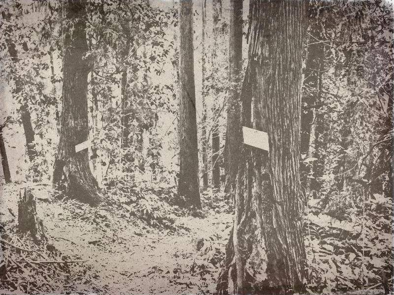
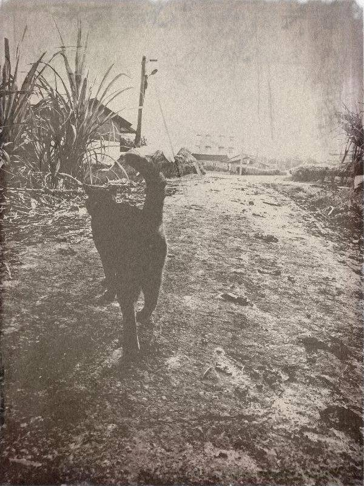

取語者黑貓

「現在的人哦，不一樣了啦！我跟妳說呀……」
一束亮光，喚醒沉睡的房子。
她從棉被堆掙扎起來，伸手摸向亮光。
「什麼時候要來喝咖啡呀？」一名長相清秀的女子浮在光束裡對她招呼。
她瞄一眼床邊敞開的行李箱，裡頭安放著一排空的瓶子。
「我晚上過去，老闆娘。」
「現在的人哦，不一樣了啦！我跟妳說呀，以前哪，只要我出馬，沒有落勾的啦……」
矮小的老人蹲在大石上，深棕色的腳趾縫兒，隱約露出墨綠的青苔，像原本就嵌在那似地。一隻蚱蜢跳上老人的腳背，他渾然不覺，繼續從口中，噴出滔滔不絕的字。
她就坐在對面，捧只小瓶子，讓字精準地落在裡頭。
等到林葉間打下的陽光，慢慢褪成橘黃，老人才站起了身，雖然踩在石頭上，身形仍舊顯得略微嬌小。她連忙扭緊瓶蓋，跟著站起身。老人臉上透著光彩，掏出一片月桃芯遞向她，另一手順勢撈起腳邊的蚱蜢，稀哩呼嚕地嚼了起來。
她倒退一步，搖了搖手，連忙彎腰道謝，再抬頭，只剩一塊長滿青苔的石頭，穩穩地坐在對面。
她長長地吁了一口氣，把裝滿字的瓶子，慎重地收進行李箱，與其他發著微弱光線的小瓶子，分門別類好好地躺在一起。她紮起馬尾，拉著玫瑰金色澤的行李箱，走進昏黃的天色，快速地往山下移動。
「黑貓妳來啦，又迷路喔？」
她彎進大樓與大樓間重疊影子的黑暗轉角，在第二個小巷的入口探頭探腦，忽然背後一個低沉的男聲，嚇了她一跳。
她轉身，眼前是座木造的平房，掛著一塊圓形的柑仔店招牌，輕輕地浮在半空中，正好擋住店門口穿汗衫的男人。
「對呀，多拐了個彎。」她邊回話，邊抽出一支細長的撢子，仔細理了理鞋跟上的泥土，才拖著行李箱走進店裡。
「不好意思，又迷路了。」一進門，就被門口的藤椅給絆了一下，她氣喘吁吁地招呼，手上還不停抓齊襯衫上的摺痕。
「來啦。」櫃臺後老闆娘笑吟吟地抱著小女娃，跟櫃臺前戴著漁夫帽的男子一起轉頭看向她。
「妳還在用行李箱喔。」戴著漁夫帽的男子面無表情地說完，又吸了口手搖飲料。
「到齊啦！」她還來不及回答，就聽見清脆的聲音從貨架間傳來，一名戴著頭巾的短髮女子揮舞著抹布，跟她招了招手，立刻轉向店門口，朝埋頭數沙漏的汗衫男子高聲喊道：「發錢！發錢！」
歡迎來到語巫們的柑仔店 ，
每天日落的魔幻時刻，為你說一個故事。
黑貓喵堪比庶務二課
獨走天涯～沒在怕
